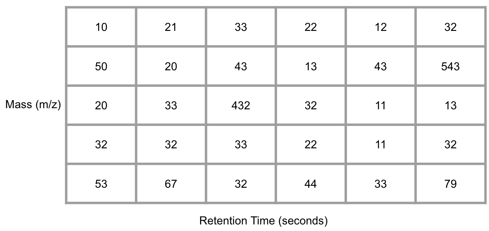
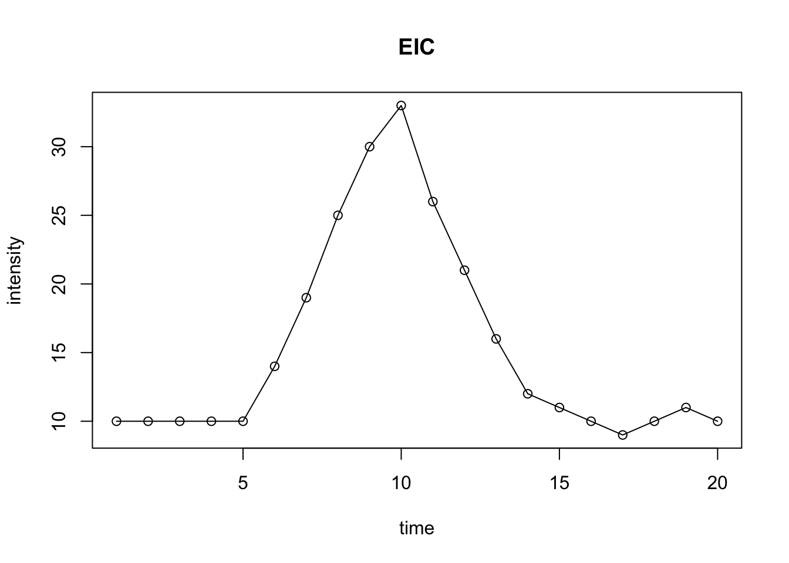
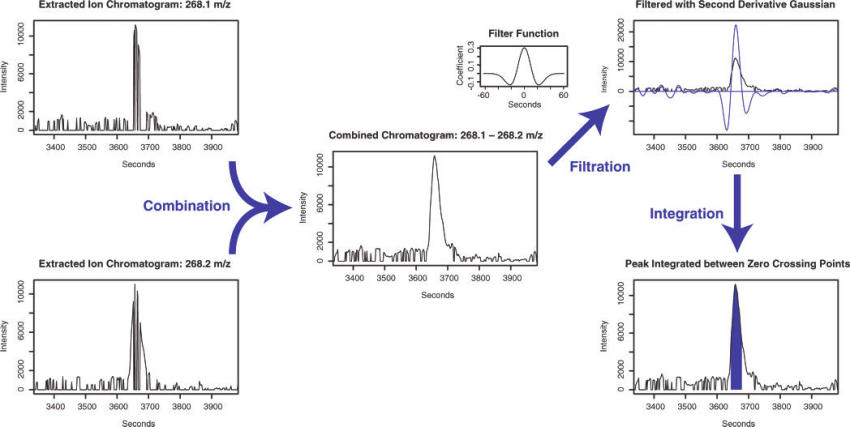
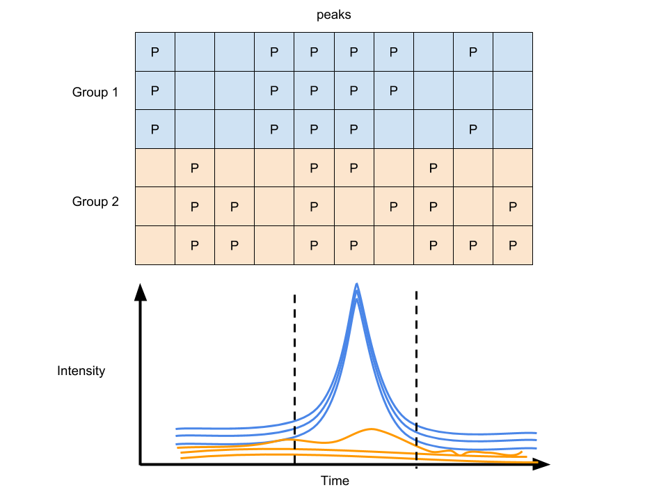
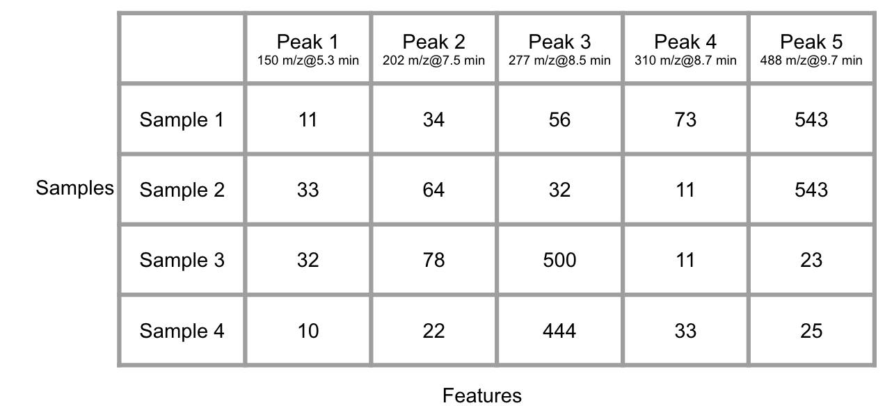

Chapter 6 Raw Data Pretreatment
Raw data from instruments such as LC-MS or GC-MS are not immediately ready for statistical analysis. Before downstream interpretation, they must be converted into features, aligned across samples, and filtered to reduce technical noise. At a basic level, these data can be summarized as:
Indexed scans with time stamps
Each scan contains a full-scan mass spectrum
Common formats for open source mass spectrum data are mzxml, mzml or CDF. However, MassComp might shrink the data size(Yang et al. 2019).
ProteoWizard Toolkit provides a set of open-source, cross-platform software libraries and tools (Chambers et al. 2012). Msconvert is one tool in this toolkit.
mzML2ISA & nmrML2ISA could generate enriched ISA-Tab metadata files from metabolomics XML data (Larralde et al. 2017).
6.1 Data visualization
You could use msxpertsuite for MS data visualization. It is biological mass spectrometry data visualization and mining with full JavaScript ability (Rusconi 2019).
FTMSVisualization is a suite of tools for visualizing complex mixture FT-MS data (Kew et al. 2017).
6.2 Peak extraction
GC/LC-MS data are usually be shown as a matrix with column standing for retention times and row standing for masses after bin them into small cell.

Figure 6.1: Demo of GC/LC-MS data
Conversation from the mass-retention time matrix into a vector with selected MS peaks at certain retention time is the basic idea of Peak extraction. You could EIC for each mass to charge ratio and use the change of trace slope to determine whether there is a peak or not. Then we could make integration for this peak and get peak area and retention time.
intensity <- c(10,10,10,10,10,14,19,25,30,33,26,21,16,12,11,10,9,10,11,10)
time <- c(1:20)
plot(intensity~time, type = 'o', main = 'EIC')
Figure 6.2: Demo of EIC with peak
However, due to the accuracy of instrument, the detected mass to charge ratio would have some shift and EIC would fail if different scan get the intensity from different mass to charge ratio.
In the matchedfilter algorithm (Smith et al. 2006), they solve this issue by bin the data in m/z dimension. The adjacent chromatographic slices could be combined to find a clean signal fitting fixed second-derivative Gaussian with full width at half-maximum (fwhm) of 30s to find peaks with about 1.5-4 times the signal peak width. The the integration is performed on the fitted area.

Figure 6.3: Demo of matchedfilter
The Centwave algorithm (Tautenhahn et al. 2008) based on detection of regions of interest(ROI) and the following Continuous Wavelet Transform (CWT) is preferred for high-resolution mass spectrum. ROI means a region with stable mass for a certain time. When we find the ROIs, the peak shape is evaluated and ROI could be extended if needed. This algorithm use prefilter to accelerate the processing speed. prefilter with 3 and 100 means the ROI should contain 3 scan with intensity above 100. Centwave use a peak width range which should be checked on pool QC. Another important parameter is ppm. It is the maximum allowed deviation between scans when locating regions of interest (ROIs), which is different from vendor number and you need to extend them larger than the company claimed. For profparam, it’s used for fill peaks or align peaks instead of peak picking. snthr is the cutoff of signal to noise ratio.
6.2.1 Parameter selection guidance
Peak picking parameters should not be selected only from software defaults. They should be chosen according to instrument type, chromatographic peak width, data resolution, noise level, and QC behavior.
For practical tuning:
Use matchedFilter mainly for lower-resolution data or older workflows where m/z binning is acceptable.
Use Centwave for high-resolution LC-MS data when accurate m/z tracking across scans is important.
Check peak width on pooled QC samples first and use that observed range to set
peakwidth.Set
ppmwider than the nominal vendor mass accuracy because chromatographic and signal fluctuations usually make the effective tolerance larger than the specification sheet suggests.Use
prefilterto suppress very small noisy regions, but do not set it so aggressively that low-abundance biological signals disappear.Use
snthreshaccording to matrix complexity: cleaner samples can tolerate lower thresholds, while dirty matrices often need higher thresholds to reduce false peaks.Inspect a subset of known peaks manually after parameter tuning instead of relying only on total feature count.
In general, a good parameter set should improve reproducibility of pooled QC features, preserve expected peak shape, and avoid inflating feature counts with obvious noise. More detected features do not always mean better preprocessing.
An Open-source feature detection algorithm for non-target LC–MS analytics could be found here to understand peak picking process(Dietrich et al. 2022). Pseudo F-ratio moving window could also be used to select untargeted region of interest for gas chromatography – mass spectrometry data(Giebelhaus et al. 2022).
mzRAPP could enables the generation of benchmark peak lists by using an internal set of known molecules in the analyzed data set to compare workflows(El Abiead et al. 2022).
G-Aligner is a graph-based feature alignment method for untargeted LC–MS-based metabolomics(Wang et al. 2023), which will consider the importance of feature matching.
qBinning is a novel algorithm for constructing extracted ion chromatograms (EICs) based on statistical principles and without the need to set user parameters(Reuschenbach et al. 2023).
Recent developments in 2025 have further refined peak detection. The Local Asymmetric Gaussian Fitting Algorithm offers enhanced peak detection for LC-HRMS data(Zou et al. 2025). For large-scale cohort studies, MetCohort provides precise feature detection and correspondence(Yang et al. 2025). Additionally, raw data simulation tools like Mzrtsim are becoming crucial for reproducible nontargeted metabolomics data analysis(Yu and Philip 2025).
Machine learning can also be used for feature extraction. Deep learning frame for LC-MS feature detection on 2D pseudo color image could improve the peak picking process (Zhao et al. 2021). Another deep learning-assisted peak curation (NeatMS) can also be used for large-scale LC-MS metabolomics(Gloaguen et al. 2022). A feature selection pipeline based on neural network and genetic algorithm could be applied for metabolomics data analysis(Lisitsyna et al. 2022).
6.3 MS/MS
Various data acquisition workflow could be checked here(Fenaille et al. 2017). Before using MS/MS annotation, it’s better to know that DDA and DIA will lose precursor found in MS1(Guo and Huan 2020; Stincone et al. 2023).
6.3.1 MRM
decoMS2 An Untargeted Metabolomic Workflow to Improve Structural Characterization of Metabolites(Nikolskiy et al. 2013). It requires two different collision energies, low (usually 0V) and high, in each precursor range to solve the mathematical equations.
Data-Independent Targeted Metabolomics Method could connect MS1 and MRM (Y. Chen et al. 2017)
DecoID python-based database-assisted deconvolution of MS/MS spectra.
6.3.2 DDA
The coverage of DDA could be enhanced by a feature classification strategy (Hu et al. 2019) or iterative process (Anderson et al. 2021).
6.3.3 DIA
DIA methods could be summarized here including MSE, stepwise windows and random windows(Bilbao et al. 2015) and here is comparison(Zhu et al. 2014).
msPurity Automated Evaluation of Precursor Ion Purity for Mass Spectrometry-Based Fragmentation in Metabolomics (Lawson et al. 2017)
ULSA Deconvolution algorithm and a universal library search algorithm (ULSA) for the analysis of complex spectra generated via data-independent acquisition based on Matlab (Samanipour et al. 2018)
MS-DIAL was initially designed for DIA (Tsugawa et al. 2015; Treutler and Neumann 2016)
DIA-Umpire show a comprehensive computational framework for data-independent acquisition proteomics (Tsou et al. 2015)
MetDIA could perform Targeted Metabolite Extraction of Multiplexed MS/MS Spectra Generated by Data-Independent Acquisition (Li et al. 2016)
MetaboDIA workflow build customized MS/MS spectral libraries using a user’s own data dependent acquisition (DDA) data and to perform MS/MS-based quantification with DIA data, thus complementing conventional MS1-based quantification (G. Chen et al. 2017)
SWATHtoMRM Development of High-Coverage Targeted Metabolomics Method Using SWATH Technology for Biomarker Discovery(Zha et al. 2018)
Skyline is a freely-available and open source Windows client application for building Selected Reaction Monitoring (SRM) / Multiple Reaction Monitoring (MRM), Parallel Reaction Monitoring (PRM - Targeted MS/MS), Data Independent Acquisition (DIA/SWATH) and targeted DDA with MS1 quantitative methods and analyzing the resulting mass spectrometer data (Adams et al. 2020).
MSstats is an R-based/Bioconductor package for statistical relative quantification of peptides and proteins in mass spectrometry-based proteomic experiments(Choi et al. 2014). It is applicable to multiple types of sample preparation, including label-free workflows, workflows that use stable isotope labeled reference proteins and peptides, and work-flows that use fractionation. It is applicable to targeted Selected Reactin Monitoring(SRM), Data-Dependent Acquisiton(DDA or shotgun), and Data-Independent Acquisition(DIA or SWATH-MS). This github page is for sharing source and testing.
Other related papers could be found here to cover SWATH and other topic in DIA(Bonner and Hopfgartner 2018; Wang et al. 2019)
MetaboAnnotatoR is designed to perform metabolite annotation of features from LC-MS All-ion fragmentation (AIF) datasets, using ion fragment databases(Graça et al. 2022).
DIAMetAlyzer is a pipeline for assay library generation and targeted analysis with statistical validation.(Alka et al. 2022)
MetaboMSDIA: A tool for implementing data-independent acquisition in metabolomic-based mass spectrometry analysis(Ledesma-Escobar et al. 2023).
CRISP: a cross-run ion selection and peak-picking (CRISP) tool that utilizes the important advantage of run-to-run consistency of DIA and simultaneously examines the DIA data from the whole set of runs to filter out the interfering signals, instead of only looking at a single run at a time(Yan et al. 2023).
6.4 Retention Time Correction
For single file, we could get peaks. However, we should make the peaks align across samples as features and retention time correction should be performed. The basic idea behind retention time correction is to use high-quality grouped peaks to infer a corrected retention time mapping between samples.
In practice, retention time correction is needed because column aging, temperature fluctuation, matrix differences, gradient drift, and long acquisition queues all shift the same compound across runs. Without proper correction, the same metabolite may be treated as different features in different samples.
You might choose obiwarp for dramatic shifts or nonlinear drift, while loess-based correction is often faster and useful when shifts are smoother. Remember the original retention times might be changed and you might need cross-correct the data. After the correction, you could group the peaks again for a better cross-sample peak list. However, if you directly use obiwarp, you do not have to group peaks before correction.
Some practical rules are:
Use pooled QC samples to evaluate retention time stability before correction.
Use obiwarp when drift is substantial or when samples span long acquisition sequences.
Use loess or feature-based local correction when many shared peaks are already available and drift is moderate.
Re-group peaks after correction because grouping before correction is often only an intermediate step.
Do not over-correct: if retention time correction forces unrelated peaks together, feature quality may become worse rather than better.
If MS/MS data or retention indices are available, they may further support alignment and correction, especially in GC-MS or more complex LC-MS studies.
This paper show a matlab based shift correction methods(Fu et al. 2017). Retention time correction is a Parametric time warping process and this paper is a good start (Wehrens et al. 2015). Meanwhile, you could use MS2 for retention time correction(L. Li et al. 2017). This work is a python based RI system and peak shift correction model, significantly enhancing alignment accuracy(Hao et al. 2023).
6.5 Filling missing values
Too many zeros or NA in peaks list are problematic for statistics. Then we usually need to integrate the area of an existing peak. xcms 3 could use profile matrix to fill the blank. They also have function to impute the NA data by replace missing values with a proportion of the row minimum or random numbers based on the row minimum. It depends on the user to select imputation methods as well as control the minimum fraction of features appeared in single group.
Feature filling should be treated differently from statistical imputation. Feature filling tries to recover a signal from the raw data at an expected m/z-retention time location after grouping. Imputation replaces missing values in the processed data matrix when no trustworthy raw signal can be integrated.
6.5.1 Feature filling choices
The main decision is whether the missing value likely reflects:
a true absent feature
a weak but real signal missed during peak detection
a misalignment or grouping problem
a technical failure in one run
Feature filling is most appropriate when the feature is consistently detected in related samples or QC samples but missing in a subset of runs because of low intensity or imperfect peak detection. It is less appropriate when the feature is sporadic, poorly aligned, or likely due to noise.
As a practical guide:
Use feature filling after retention time correction and grouping, not before.
Use pooled QC behavior to judge whether a feature is real and stable enough to be filled.
Avoid aggressive filling of rare features that appear in only a small fraction of samples.
Separate feature filling from later statistical imputation so that readers know whether a value comes from integrated raw signal or a post hoc replacement rule.

Figure 6.4: Peak filling of GC/LC-MS data
With many groups of samples, you will get another data matrix with column standing for peaks at certain retention time and row standing for samples after the Raw data pretreatment.

Figure 6.5: Demo of many GC/LC-MS data
6.6 QC design in preprocessing
QC samples are not only for later normalization. They are also central to raw data preprocessing. Pooled QC samples provide a practical reference for parameter tuning, retention time correction assessment, peak reproducibility, and feature filtering.
During preprocessing, QC samples can be used to:
estimate realistic peak width and signal intensity ranges
check whether peak picking parameters are too loose or too strict
evaluate retention time drift across the run sequence
identify unstable features with high RSD before downstream statistics
decide whether missing features are likely biological absences or preprocessing failures
Therefore, QC design in Chapter 2 should be connected directly to preprocessing. If pooled QC samples are well designed and inserted regularly across the run order, raw data processing becomes much easier to optimize and to justify.
6.7 Spectral deconvolution
Without structure information about certain compound, the peak extraction would suffer influence from other compounds. At the same retention time, co-elute compounds might share similar mass. Hard electron ionization methods such as electron impact ionization (EI), APPI suffer this issue. So it would be hard to distinguish the co-elute peaks’ origin and deconvolution method[] could be used to separate different groups according to the similar chromatographic behaviors. Another computational tool eRah could be a better solution for the whole process(Domingo-Almenara et al. 2016). Also the ADAD-GC3.0 could also be helpful for such issue(Ni et al. 2016). Other solutions for GC could be found here(Styczynski et al. 2007; Tian et al. 2016; Du and Zeisel 2013).
6.8 Dynamic Range
Another issue is the Dynamic Range. For metabolomics, peaks could be below the detection limit or over the detection limit. Such Dynamic range issues might raise the loss of information.
6.8.1 Non-detects
Some of the data were limited by the detect of limitation. Thus we need some methods to impute the data if we don’t want to lose information by deleting the NA or 0.
Two major imputation way could be used. The first way is use model-free method such as half the minimum of the values across the data, 0, 1, mean/median across the data( enviGCMS package could do this via getimputation function). The second way is use model-based method such as linear model, random forest, KNN, PCA. Try simputation package for various imputation methods. As mentioned before, you could also use imputeRowMin or imputeRowMinRand within xcms package to perform imputation.
Tobit regression is preferred for censored data. Also you might choose maximum likelihood estimation(Estimation of mean and standard deviation by MLE. Creating 10 complete samples. Pool the results from 10 individual analyses).
x <- rnorm(1000,1)
x[x<0] <- 0
y <- x*10+1
library(AER)
tfit <- tobit(y ~ x, left = 0)
summary(tfit)##
## Call:
## tobit(formula = y ~ x, left = 0)
##
## Observations:
## Total Left-censored Uncensored Right-censored
## 1000 0 1000 0
##
## Coefficients:
## Estimate Std. Error z value Pr(>|z|)
## (Intercept) 1.0000 0.4466 2.239 0.0252 *
## x 10.0000 0.3162 31.623 <2e-16 ***
## Log(scale) 2.1846 0.0000 Inf <2e-16 ***
## ---
## Signif. codes: 0 '***' 0.001 '**' 0.01 '*' 0.05 '.' 0.1 ' ' 1
##
## Scale: 8.887
##
## Gaussian distribution
## Number of Newton-Raphson Iterations: 1
## Log-likelihood: -3104 on 3 Df
## Wald-statistic: 1000 on 1 Df, p-value: < 2.22e-16According to Ronald Hites’s simulation(Hites 2019), measurements below the LOD (even missing measurements) with the LOD/2 or with the \(LOD/\sqrt2\) causes little bias and “Any time you have a % non-detected >20%, for whatever reason, it is unlikely that the data set can give useful results.”
Another study find random forest could be the best imputation method for missing at random (MAR), and missing completely at random (MCAR) data. Quantile regression imputation of left-censored data is the best imputation methods for left-censored missing not at random data (Wei et al. 2018).
6.8.2 Over Detection Limit
CorrectOverloadedPeaks could be used to correct the Peaks Exceeding the Detection Limit issue (Lisec et al. 2016).
6.9 RSD/fold change Filter
Some peaks need to be rule out due to high RSD% and small fold changes compared with blank samples. A more general feature filtering for biomarker discovery can be found here(Gadara et al. 2021) and a detailed discussion on intensity thresholds could be found here(Houriet et al. 2022).
6.10 Power Analysis Filter
As shown in \[Experimental design(DoE)\], the power analysis in metabolomics is ad-hoc since you don’t know too much before you perform the experiment. However, we could perform power analysis after the experiment done. That is, we just rule out the peaks with a lower power for current experimental design.